Trepa
Product design
Redesigning Trepa from a mobile-only app into a responsive prediction platform built around how traders discover, make and track predictions.
- Role
- Product Designer & Researcher
- Timeline
- June 2025 - June 2026
- Tools
- Figma, FigJam, Figma Slides, TweakCN, Framer
- Scope
- UX research, Information architecture, Mobile and desktop UI design, Design system, Developer handoff
Overview
A precision prediction platform where users forecast numerical outcomes and compete based on the accuracy of their estimates, with the potential for greater rewards tied to their precision.
Trepa wound down in August 2026. This case study documents the product and my contributions during my time as a full-time Product Designer.
I was responsible for maintaining the marketing website and redesigning Trepa’s web app for mobile and desktop. I focused on three things: helping users find pools, understand them at a glance, and want to return.
A precision-based product with an underdeveloped experience
When I joined Trepa, the web app had limited features for exploring the app fully. The search button alone was not enough to help users find specific pools, especially as the number of markets grew. The prediction cards also showed too little to judge a pool.
The app offered little to keep users engaged beyond the leaderboard, and it only had a mobile breakpoint.
My task was to completely redesign the mobile experience and design a desktop version. I also worked on improving navigation, making pool discovery easier, showing more useful information on prediction cards, and introducing features that would encourage users to return and participate more often.
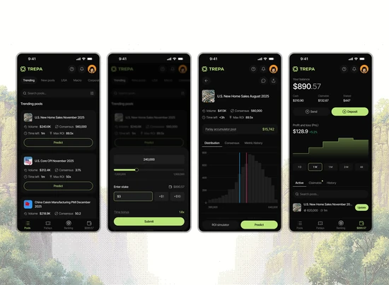
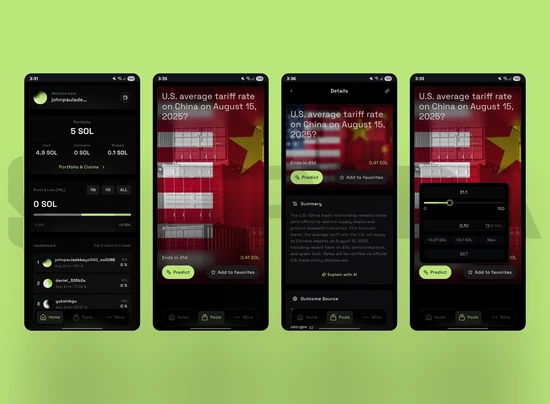
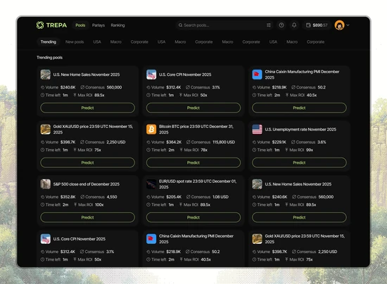
Who we designed for
Trepa’s users were crypto traders and prediction-market participants who often scanned interfaces quickly and were familiar with binary yes-or-no markets. Trepa’s numerical predictions required a different approach: users had to estimate a value rather than choose between two outcomes.
Learning from the product and its competitors
The first step was using the app to identify features that were missing or difficult to use. I also carried out competitor research on platforms like Limitless, Polymarket, and Kalshi for study and to identify features that made their products easier to use and encouraged users to return.
The research helped me identify gaps in Trepa’s experience and informed how I structured the app’s navigation, pages, and user flows. I mapped out how users would discover pools, make predictions, track their performance, claim rewards, and manage their profiles.
This gave me a clearer direction for the redesign and helped me decide which features to introduce and how the different sections of the app should work together.
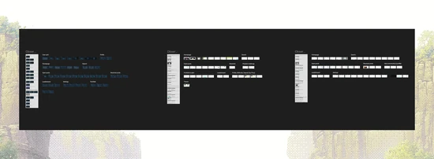
Designing the experience
Pools homepage
I redesigned the homepage to make it easier for users to find and participate in prediction pools. Since the search button alone wasn't enough to navigate through hundreds of markets, I introduced filters that allowed users to narrow pools by topic, status, volume, and time.
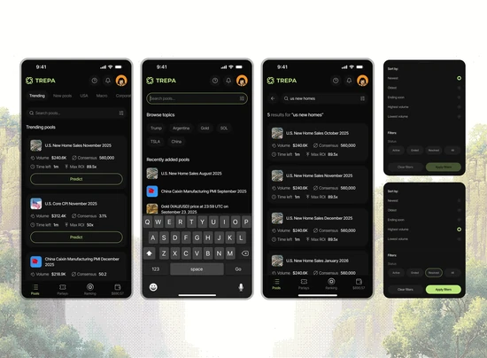
I also redesigned the prediction cards to show key information at a glance, including pool volume, time left, median predicted value, and maximum ROI.
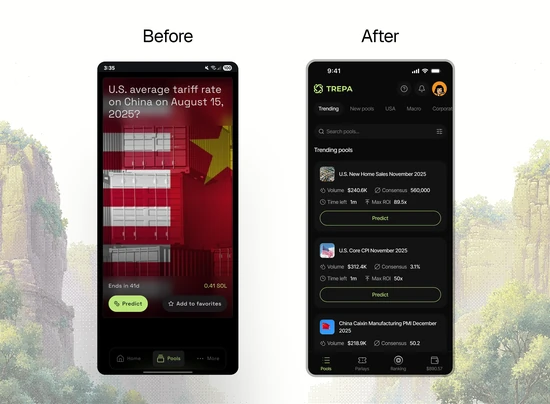
For mobile users, a centred modal sits in the hardest part of the screen to reach. I moved quick prediction and filters into bottom drawers so the main actions fall within thumb reach. I also reworked the navigation to give users clear access to Pools, Parlays, Rankings, and Portfolio. These changes were aimed at helping users discover relevant pools faster, understand their current state more easily, and make predictions with fewer steps.
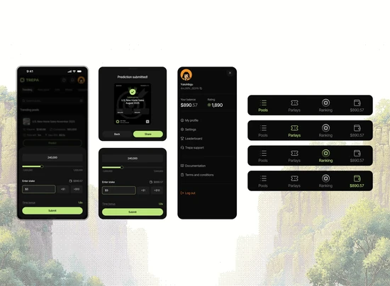
Prediction details
I redesigned the prediction details page to give users the information they needed to evaluate a pool and make informed predictions. I added distribution and consensus charts to help users compare their forecasts with other participants, along with a timeline, an email update option, and a social section for users in a prediction pool to share their opinions and thought process.
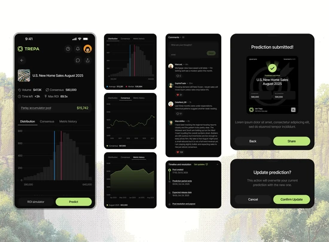
The page adapts to each pool's state, allowing users to submit or update predictions, review resolved pools and leaderboard rankings, and claim rewards where applicable.
I designed the reward-claiming drawer and shareable performance cards so users could review and share their results on social media. Users could also revisit their predictions through their portfolio history.
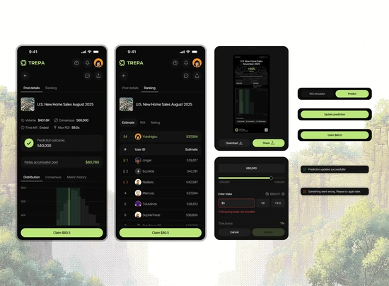
ROI simulator: understanding potential returns
The ROI simulator was a standalone feature introduced by one of the co-founders to help users explore the potential returns of their predictions.
My role was to translate the underlying functionality into a clear interface, simplifying the layout and interaction flow so users could explore potential outcomes more easily.
During beta testing, however, few users tried it, and many didn’t understand what it was for. Simplifying the interface wasn’t enough; users also needed to see why the feature mattered to them.
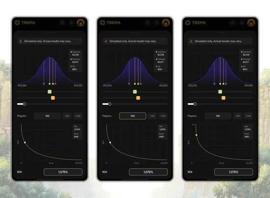
Portfolio page
I redesigned the portfolio page to give users a clearer view of their prediction activity and performance. I added a PnL trend line and organized the page into Active, Claimable, and History tabs with search inputs, making it easier to track ongoing predictions, collect rewards, and review past results.
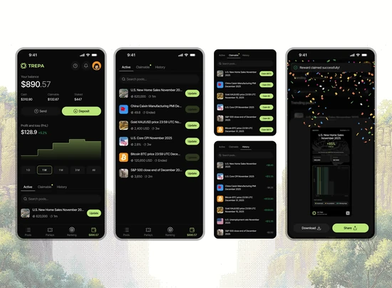
Rankings and gamification
Beyond a leaderboard, Trepa gave users little reason to keep predicting. I used gamification, meaning progression and status, to give them goals to work toward.
I redesigned the rankings page with separate leaderboards for rating, ROI and P&L. On top of the Elo rating built by the engineering team, I introduced a tier system, named and structured the tiers from Pathfinder to Grandmaster, and designed a custom badge for each one. Each tier gave users a visible status to earn. Locked badges sit beside earned ones, so users can see what is left to collect.
To keep that goal in view, I added a rating indicator and a “next tier” element showing how close a user is to levelling up. The progress indicator was designed to make the next tier feel attainable and give users a clearer goal to work towards. Selecting a position on the leaderboard opens a summary of that user’s P&L, ROI and tier, so users can compare their performance with others.
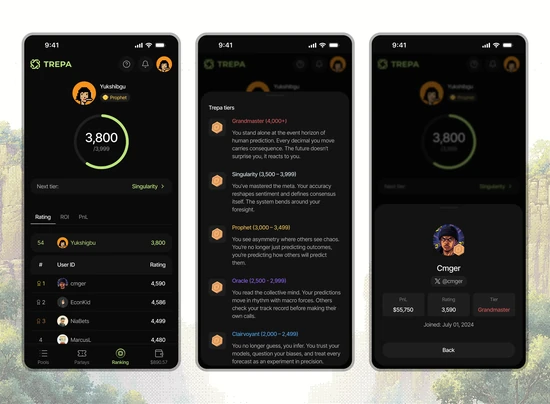
Parlays
Parlays let users build streaks across recurring markets, with accumulated wins that can be claimed together. The page gives users a place to track their progress and see how close they are to completing a streak.
I designed the progress cards, claim buttons, and parlay flex card to help users track their streaks and view or share their results.
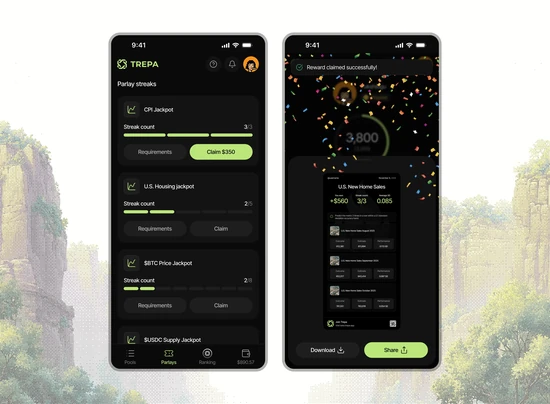
Profile, referrals and settings
I redesigned the profile page to bring users' identity and progress together. It displayed their current tier, earned and locked badges, prediction statistics, bio, and referral count.
I also proposed the referral programme based on my competitor research. I designed the referral experience around unique codes and shareable links, with a drawer displaying a social card users could share to invite others.
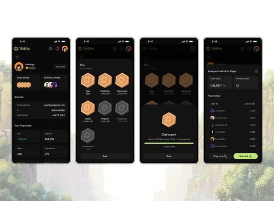
For settings, I designed controls for updating account details, connecting an X account, and managing notification preferences.
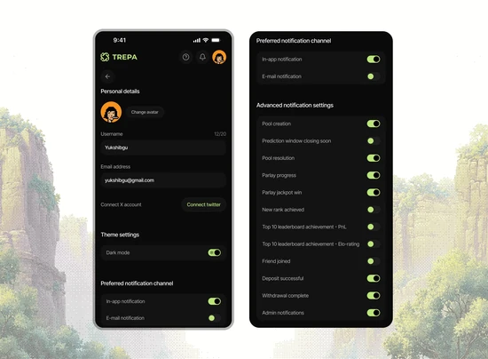
Notification experience: keeping users informed
While using Trepa and researching competing platforms, I noticed that users had limited ways to stay informed about pool activity. I wasn't receiving updates when pools I participated in ended, when new pools became available, or when other relevant activity occurred. I brought this gap to the team and suggested improving the notification experience.
As part of the redesign, I worked on the user-facing interface and flows, including in-app notifications, email updates, and notification preferences. I designed controls that allowed users to choose how they received updates and manage the types of notifications they wanted to receive.
The goal was to help users stay informed about relevant activity without having to constantly check the app themselves.
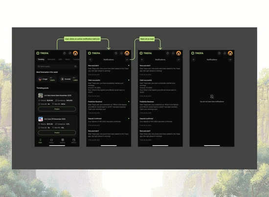
Iterations and trade-offs
Throughout the redesign, I tested different layouts and interactions, using feedback from beta users and discussions with the team to guide improvements.
The ROI simulator was underused. In beta testing, few users interacted with it, and many didn’t understand its purpose. It showed me that a well-designed feature can still miss its audience. Next time, I’d test the concept with users before refining the interface.
Space on the first screen was precious. We needed to show as many pools as possible in the first viewport. I tested several prediction card layouts to fit more information into less space. I also designed a weekly top-forecasters carousel to give users a reason to compete, but it pushed pools down the page, so it was removed.
A button can be too loud. Some beta users found the primary prediction button too bright and bold and said it strained their eyes. I created softer variations and tested them.
Responsive design and developer collaboration
Since the original web app only had a mobile breakpoint, I designed a desktop version to make Trepa easier to use across different screen sizes.
I worked closely with the frontend engineer during development, reviewing the implementation against my Figma designs and user flows to identify areas that needed adjustment. I also recreated and maintained the design system in TweakCN, using its shadcn component editor to help manage the UI components and keep the implementation consistent with the designs.
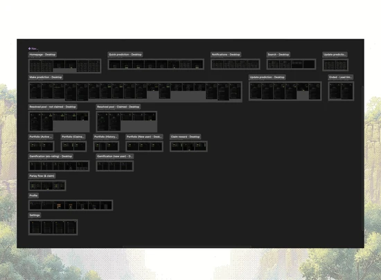
Marketing website
I maintained and updated Trepa’s marketing website, trepa.io, in Framer. I also created product illustrations to help visitors understand what Trepa does and communicate the platform’s core concept more clearly.
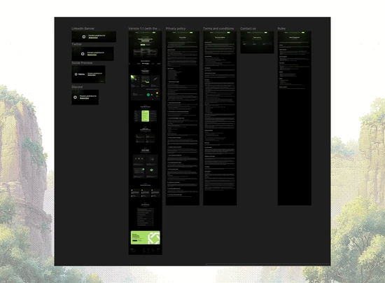
Brand identity and guidelines
I developed Trepa’s brand guidelines to ensure consistent use and representation of the brand across social media and in-person events. The guidelines helped establish a consistent visual direction for the brand’s communications.
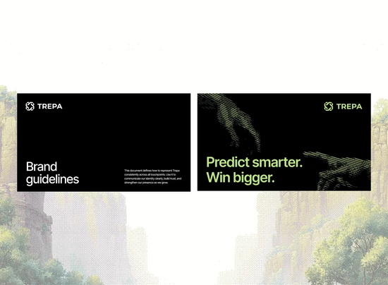
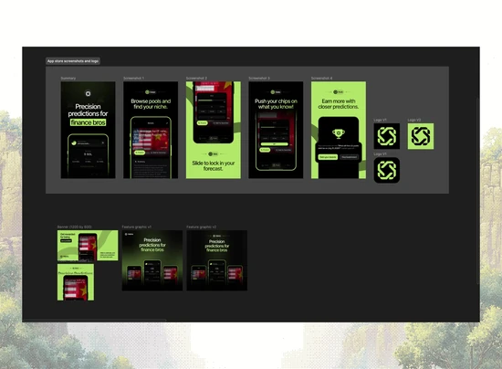
Social media visuals and pitch decks
I designed graphics for product announcements, social media posts, and Substack newsletter articles. I also designed pitch decks for product presentations on different occasions, helping the team communicate Trepa’s product, features, and vision to different audiences.
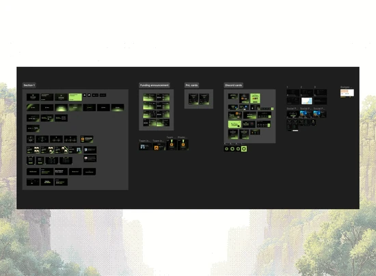
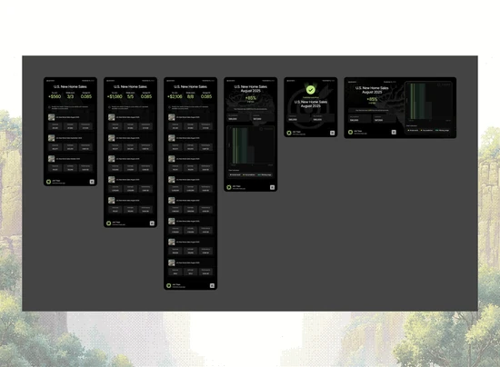
Outcome
During my time at Trepa, I worked across the product experience and brand, redesigning the app for mobile and desktop while maintaining the marketing website and creating visual assets for social media announcements and pitch decks.
The redesign brought more of the user journey into one connected experience. Users could discover pools, explore the details, make and update predictions, track their progress, share thoughts with other participants, claim winnings and share their results. I also designed features like Parlays to give users more ways to engage with the platform and follow their performance over time.
What testing revealed
Beta testing helped me identify areas where the experience needed more work. I found that the ROI simulator wasn't being used as much as I had expected, which challenged my assumption that users needed that level of guidance when making predictions.
Feedback also shaped smaller but important decisions. I explored softer colours for the primary prediction button after users found the original too intense. I also simplified the pool cards to reduce visual clutter and make more pools visible in the first viewport.
What I learned
The experience taught me that good product design isn't just about introducing useful features; it's about understanding which features people actually need.
I learned to use competitor research to identify familiar patterns that could make a new product easier to understand, rather than reinventing established interactions without a clear reason. Working closely with the frontend developer also helped me understand the importance of building clear, consistent components and making design decisions that could be translated into code.
Most importantly, beta testing taught me to pay attention to what users actually do, not just what I expect them to do.